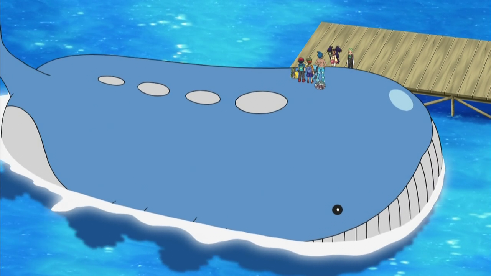

- El nombre "Pokémon" proviene de la combinación de las palabras "Pocket" (bolsillo) y "Monster" (monstruo) ya que los Pokémon son criaturas que puedes llevar contigo en una pequeña bola llamada Pokéball.
- Pikachu, el Pokémon más icónico, no fue creado para ser la mascota principal de la franquicia. De hecho, Clefairy fue considerado para ese papel antes de que Pikachu fuera elegido.
- Existe un Pokémon llamado Ditto que puede transformarse en cualquier otro Pokémon. Su única habilidad es "Transformación".


- El Pokémon más grande es Wailord, que mide 14.5 metros de largo y pesa 398 kg.
- El Pokémon más pequeño es Joltik, que mide apenas 0.1 metros de altura y pesa 0.6 kg.
- El Pokémon Ditto puede transformarse en cualquier otro Pokémon, pero no puede copiar la fuerza o habilidades de ese Pokémon.